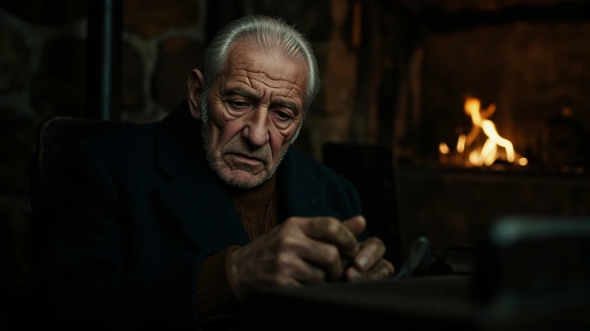
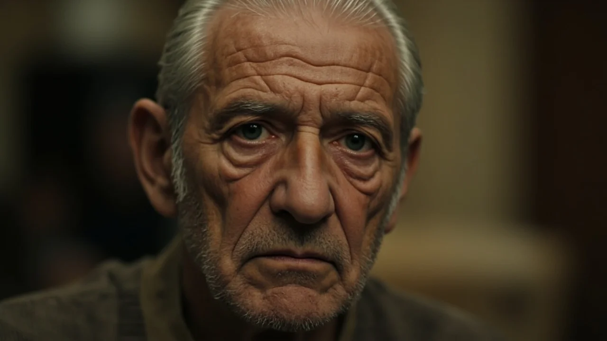
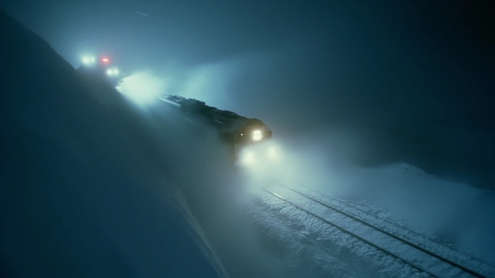
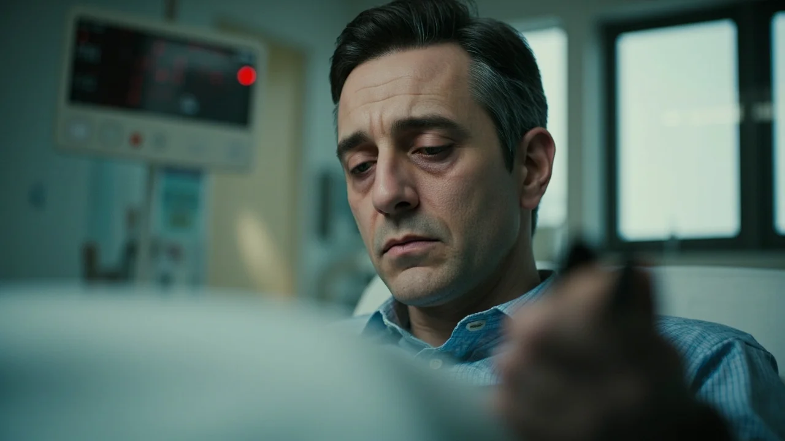
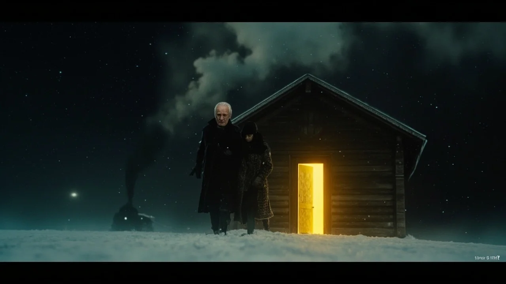

El frío del valle siempre avisaba antes en el metal que en los huesos. A las seis de la mañana, cuando Mateo abría la puerta para echar dos astillas de encina a la estufa, los raíles de la vía estrecha emitían un crujido seco, como si el acero se encogiera bajo la primera helada. Treinta y cinco años al frente de locomotoras diésel dejaban una huella que el jabón no borraba: manchas oscuras bajo las uñas y un zumbido sordo en el oído izquierdo que le marcaba el compás de las horas.
La caseta del guardagujas, donde vivía desde que enviudó, se levantaba a diez metros del apeadero. La estación del pueblo había cerrado a finales de los noventa y solo quedaba una marquesina de hormigón donde el regional frenaba dos veces al día. Para los vecinos, el tren era un estorbo que bajaba las barreras del paso a nivel; para Mateo, era el único reloj fiable en un valle solitario. Cada mañana sacaba del chaleco el reloj de bolsillo de la compañía, levantaba la tapa de plata gastada con el pulgar y comprobaba que los números negros coincidían con la vibración de la grava.
Faltaban cuatro días para la Nochebuena. La nieve cubría despacio los bancales y se acumulaba en las traviesas. Mateo se ajustó la gorra de paño, se abrochó el abrigo de ferroviario y salió a barrer el andén con una escobilla de ramas. Jamás esperaba a nadie, pero dejar que la nieve tapara la línea amarilla de seguridad le parecía una dejadez intolerable. Cuando el motor del automotor de la tarde bramó a la salida del túnel, apoyó la escoba contra el muro y se metió las manos en los bolsillos para ver pasar el convoy.
El tren frenó con un chillido prolongado de zapatas que levantó una nube de vapor húmedo. De la puerta corredera cayó una maleta de lona verde antes de que asomara una figura menuda.
Era una muchacha de veinticuatro años, envuelta en una trenca de pana con cuello de borrego y una bufanda verde que le tapaba la barbilla. Llevaba el pelo castaño recogido de cualquier manera y una mochila a la espalda. Pisó la nieve fresca con torpeza, mirando a ambos lados del andén desierto hasta clavar sus ojos oscuros en el anciano.
—¿Señor Mateo? —preguntó ella. Su aliento formó una bocanada blanca en el aire helado.
Mateo no se movió.
—Depende de quién pregunte —respondió con aspereza.
La joven dio dos pasos hacia él, arrastrando la maleta. No sonreía, pero en su mirada había una firmeza que a Mateo le sacudió el estómago.
—Soy Inés —dijo, bajándose la bufanda—. La hija de Andrés.
El nombre cayó entre los dos como una piedra en agua turbia. Hacía quince años que nadie pronunciaba el nombre de su hijo en aquella casa. La última vez que había visto a la muchacha era una niña de cuatro años en los bancos de un juzgado, asustada por el tamaño de sus botas.

—Tu padre no me habla —dijo Mateo—. No creo que le agrade que estés aquí.
—Mi padre está en una cama del hospital provincial —replicó Inés sin titubear—. Lo operaron de urgencia el martes por una obstrucción intestinal. No puede viajar todavía, pero me dio las llaves del aparador y me pidió que recogiera los papeles del molino y el libro de familia.
Mateo sintió un golpe sordo en el pecho, pero apretó la mandíbula para no delatarse.
—Pudo telefonear —masculló.
—No tiene su número, abuelo —contestó Inés con una serenidad dolorosa—. Y usted tampoco tenía el suyo. Así que mueva esa maleta o nos congelaremos antes de que el automotor arranque.
La cocina olía a posos de café y a leña de roble. Inés se sentó junto a la mesa camilla mientras Mateo servía dos tazones de caldo hirviendo. Durante un buen rato, las palabras se redujeron a noticias médicas: la anestesia, las suturas y los días de reposo que le quedaban a Andrés.
A la mañana siguiente, la nieve cubría los caminos con medio metro de espesor. Inés encontró los documentos en el aparador antes de mediodía, pero no hizo ademán de marcharse. Siguió a su abuelo hasta el muelle de carga, un cobertizo anexo donde Mateo guardaba las reliquias de la compañía: faroles de carburo de latón limpio, gorras de plato y una hilera de fotos en blanco y negro colgadas del muro de adobe.
Inés se detuvo ante una imagen enmarcada: una máquina de la serie trescientos diecinueve detenida sobre un viaducto con tres hombres sonrientes junto a la topera. Mateo estaba en medio, joven y con la gorra ladeada.
—Tenías treinta años ahí —dijo ella, rozando el cristal.
—Treinta y dos —corrigió él, apoyado en su bastón de fresno—. Tirábamos de doce tolvas de mineral desde las minas del norte. No había calefacción en cabina. Nos calentábamos las manos en los tubos del vapor y comíamos tocino frío sobre pan duro para no dormirnos en las rampas.
—Se te encienden los ojos cuando hablas del ferrocarril —comentó Inés, mirándolo de frente—. Hablas de esta línea como si fuera una persona viva. Pero cuando sale el nombre de mi padre, pareces de piedra.

Mateo clavó la vista en las tablas del suelo.
—Eran otros tiempos. Si un maquinista fallaba, las fábricas paraban. Yo echaba catorce horas diarias para que en casa hubiera lumbre, zapatos nuevos y un plato de carne los domingos. Todo lo hice para que a tu padre no le faltara nada.
Inés no apartó los ojos. Su voz sonó pausada y limpia.
—Papá me dijo que de pequeño sentía que los trenes eran sus enemigos. Creía que para conseguir diez minutos de tu atención tenía que comprar un billete y sentarse en un vagón, porque a los desconocidos los llevabas siempre a sus casas, pero a la tuya solo llegabas cuando ya se habían apagado las luces.
Mateo no encontró respuesta. Tragó saliva, dio media vuelta y salió al andén sin mirar atrás.
Aquella noche el viento sopló con furia, arrancando ramas secas de los sauces. Mateo no pudo conciliar el sueño. Permaneció sentado en la butaca junto a la estufa apagada, con una manta sobre las rodillas y el reloj de bolsillo apretado en el puño. Las palabras de Inés le martilleaban las sienes.
Hacia las dos de la madrugada encendió una palmatoria y subió al desván. Entre cajas de herramientas y mantas viejas sacó una lata redonda de membrillo con el precinto roto. Dentro guardaba un pequeño billete de cartón duro, del tamaño de dos dedos, con los bordes gastados. Llevaba impresa la fecha en tinta morada: veinticuatro de diciembre de mil novecientos noventa. Bajo el billete reposaba una fotografía cuadrada: Andrés a los nueve años, en pijama de rayas frente a un árbol de Navidad torcido, con una caja alargada de cartón entre las rodillas. El niño no sonreía; miraba a la cámara con los ojos enrojecidos de llorar.
Mateo acarició el cartón y la memoria lo arrastró treinta y seis años atrás.
Aquella Nochebuena debía terminar su servicio a las tres de la tarde. En la estación, un fogonero joven le suplicó que le cubriera el regreso porque su madre agonizaba en un sanatorio. Mateo aceptó pensando en las horas extras para pagar el tren eléctrico que Andrés miraba fascinado en los escaparates. Pero en el puerto de montaña una ventisca bloqueó las agujas y una avería en el compresor dejó el convoy atrapado en la nieve. Pudo regresar en el camión de auxilio, pero su orgullo le impidió abandonar la locomotora.
Llegó a casa a las cuatro de la madrugada, calado hasta los huesos, con el paquete bajo el brazo. En la cocina, su esposa Carmen lloraba en silencio frente a una cena fría y cuajada de grasa. En el sofá, Andrés dormía con la ropa de fiesta puesta, abrazado a un soldadito de plástico. Al despertarlo para darle el regalo, el niño apartó la caja de un golpe furioso.
—¿Por qué los que van en el tren importan más que nosotros? —le soltó el pequeño entre lágrimas—. ¡Me prometiste que cenaríamos juntos!

Mateo, consumido por el cansancio y una vergüenza que no supo gobernar, reaccionó a gritos. Lo llamó consentido y desagradecido, jurando que se partía la espalda en las vías para darle una vida mejor. Nadie abrió el juguete aquella noche. En los años siguientes, cada conversación fue un choque entre la ausencia sentida por el hijo y los sacrificios invocados por el padre. Cuando Carmen murió, el silencio se volvió definitivo y Andrés se marchó del valle.
Mateo guardó el billete infantil en el bolsillo del chaleco y bajó a la cocina. No volvió a acostarse.
Al clarear el día veinticuatro, el aroma a café recién hecho templó la caseta. Inés entró abrochándose las botas y encontró a su abuelo mirando fijamente el teléfono negro de baquelita de la pared. Sobre la mesa descansaba el papel con el número de la habitación del hospital.
—Lleva horas despierto —dijo Inés con ternura, dejando una taza humeante frente a él.
Mateo alzó las manos temblorosas.
—Treinta años culpando a tu padre —murmuró con la voz rota—. Me parecía injusto que despreciara mi frío y mis noches en vela. Pensaba: «¿Cómo puede reprocharme nada si me dejé la juventud por él?».
Inés apoyó la mano en el hombro del anciano sin decir palabra.
—Anoche entendí que el cobarde fui yo —continuó Mateo—. Admitir que él tenía razón era aceptar que me equivoqué de parte a parte. Un chaval de nueve años no necesita un tren de latón; necesita a su padre sentado a la mesa antes de que se enfríe la cena. Me escondí en el orgullo de maquinista porque me daba miedo mirarlo a la cara y pedirle perdón.
Inés descolgó el auricular y se lo tendió.
—Llámalo, abuelo.
Mateo agarró el aparato. Metió el índice en la rueda de marcar, haciendo girar los números con un tintineo que retumbó en la estancia. Tras cuatro tonos largos, una voz ronca y fatigada respondió al otro lado del hilo:

—¿Diga?
A Mateo se le cerró la garganta.
—¿Inés? ¿Eres tú? —insistió la voz.
—No, Andrés —dijo el anciano por fin—. Soy tu padre.
El silencio al otro lado se volvió espeso. Mateo no esperó a que la distancia volviera a ganar la partida.
—No te llamo para dar explicaciones —dijo el viejo apretando el auricular contra la oreja—. No voy a hablarte de la nieve ni del trabajo. Te llamo para decirte que tenías razón. Te fallé aquella Nochebuena. Y te fallé en todas las que vinieron después por no haber tenido la hombría de pedirte perdón de rodillas. Eras solo un niño y tenías derecho a tener un padre en casa. Lo siento, hijo. Lo siento de corazón.
Al otro lado sonó una respiración entrecortada y un gemido que intentaba contener el llanto.
—Papá… —susurró Andrés—. No hacía falta…
—Hacía falta —le atajó Mateo con voz firme—. Treinta y seis años tarde, pero hacía falta. No te pido que olvides nada. Solo quería que lo escucharas de mi boca.
Se oyó el zumbido distante de un respirador y el trajín del pasillo del hospital.
—Estaba convencido de que solo te importaba el ferrocarril —confesó Andrés, quebrando la voz—. Que nosotros éramos una carga.
—No hubo un solo viaje en que no pensara en vosotros —respondió Mateo, sintiendo las lágrimas calientes en las mejillas—. Pero no supe demostrarlo.

—Cuando me den el alta en enero… —dijo Andrés tras tomar aire—, me gustaría subir al pueblo. Si todavía me guardas un sitio.
—Aquí está tu casa —dijo Mateo sonriendo entre el llanto—. Siempre estuvo.
La tarde de Nochebuena tiñó el valle de un azul frío y despejado. En la caseta, Mateo e Inés prepararon una cena humilde: patatas cocidas con bacalao, pan de centeno y unos trozos de turrón blando. La estufa chisporroteaba con vigor y el vapor de la cazuela empañaba los vidrios.
Antes de cenar, Inés sacó del bolsillo de la trenca un paquete envuelto en papel de estraza y atado con hilo de cáñamo.
—Lo compré en el puesto del andén de transbordo —dijo, poniéndolo junto al plato del anciano—. Valía poco dinero. Pensé que debía estar aquí esta noche.
Mateo retiró el papel. Apareció una pequeña locomotora de hojalata pintada de verde y rojo, de diez centímetros de largo, con las ruedas de plomo desgastadas y la pintura picada por los juegos de otro tiempo. El anciano la tomó con devoción entre sus dedos rudos. Sacó el billete de cartón de mil novecientos noventa y colocó el juguete encima, presidiendo la mesa.
—Tu padre quería una máquina que echara humo de verdad —sonrió Mateo—. Soñaba con tender las vías esquivando las patas de las sillas del salón.
—Aún podéis tenderlas en primavera —dijo Inés, sirviéndole un vaso de vino—. Ninguno de los dos tiene prisa ya.
A las nueve y media, una vibración profunda subió desde el fondo del valle. A lo lejos, el silbato largo del último tren de la víspera rasgó el aire helado. Mateo e Inés salieron al andén arrebujados en sus abrigos. La noche estaba limpia, cubierta de estrellas diminutas.
El convoy asomó entre los árboles sin detenerse: una máquina y tres vagones con las luces encendidas donde regresaban los últimos viajeros. Al ver a las dos figuras en el apeadero, el maquinista tiró del silbato dos veces, regalándoles un saludo sonoro que retumbó en los riscos. Las ventanillas pasaron como una franja dorada que iluminó fugazmente la nieve de las vías.
Mateo sacó el billete de cartón del bolsillo. Lo miró por última vez: la fecha borrosa, el orificio de la tenaza y el testimonio de tantos años de rencor estéril. Con un ademán pausado, lo apoyó sobre la madera carcomida del banco del andén, dejando que los copos de nieve fina empezaran a posarse sobre él.
El viaje prometido ya no era una deuda del pasado, sino un camino nuevo que esperaba abierto.
Inés le tomó del brazo con ternura para resguardarlo de la ventisca. Mateo respiró el olor a humo que dejaba el tren en la noche y ambos regresaron despacio a la luz tibia de la caseta.